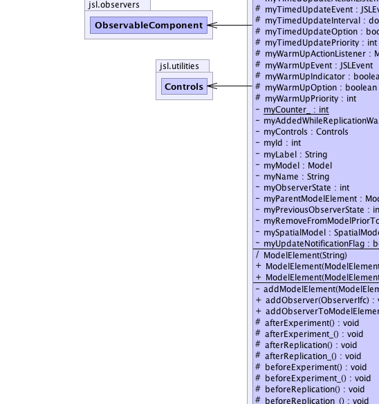

jsl.modeling.ModelElement
jsl.modeling.ModelElement
|
||||||||||
| PREV CLASS NEXT CLASS | FRAMES NO FRAMES | |||||||||
| SUMMARY: NESTED | FIELD | CONSTR | METHOD | DETAIL: FIELD | CONSTR | METHOD | |||||||||
java.lang.Object
public abstract class ModelElement
The ModelElement represents elements within the simulation model that can schedule and react to simulation events and default simulation actions (e.g. setup, begin replication, warm up, after replication, end simulation, etc.) The ModelElement is a component in the composite pattern
|  | |
| Nested Class Summary | |
|---|---|
protected class |
ModelElement.TimedUpdateEventAction
|
protected class |
ModelElement.WarmUpEventAction
|
| Field Summary | |
|---|---|
static int |
AFTER_EXPERIMENT
An "enum" for the end of simulation state. |
static int |
AFTER_REPLICATION
An "enum" for the after replication state. |
static int |
BEFORE_EXPERIMENT
An "enum" for the setup state. |
static int |
BEFORE_REPLICATION
An "enum" for the before replication state. |
static int |
CONDITIONAL_ACTION_REGISTRATION
An "enum" to indicate that the model element performed its registerConditionalActions() method |
static int |
DEFAULT_TIMED_EVENT_PRIORITY
A constant for the default batch priority |
static int |
INITIALIZED
An "enum" for the initialization state. |
static int |
MONTE_CARLO
An "enum" for the monte carlo state. |
private boolean |
myAddedWhileReplicationWasRunningFlag
Indicates that the model element was added to the model while a replication was running. |
protected boolean |
myAfterExperimentOption
A flag to control whether or not the model element reacts to after experiment actions. |
protected boolean |
myAfterReplicationOption
A flag to control whether or not the model element reacts to after replication actions. |
protected boolean |
myBeforeExperimentOption
A flag to control whether or not the model element reacts to before experiment actions. |
protected boolean |
myBeforeReplicationOption
A flag to control whether or not the model element reacts to before replication actions. |
private Controls |
myControls
Can be used by sub-classes to assist in implementing the ControllableIfc By default myControls is null, unless setControls() is called Use the protected method getControls() to access this in subclasses. |
private static int |
myCounter_
incremented to give a running total of the number of model elements created |
private int |
myId
The id of the model element, currently if the model element is the ith model element created then the id is equal to i |
protected boolean |
myInitializationOption
A flag to control whether or not the model element reacts to initialization actions |
private java.lang.String |
myLabel
A general string that can be used to label the model element Unlike the model element's name (e.g. getName()) the label does not have to be unique. |
protected double |
myLengthOfWarmUp
The length of time from the start of the simulation to the warm up event. |
private Model |
myModel
A reference to the overall model containing all model elements. |
protected java.util.List<ModelElement> |
myModelElements
A collection containing the first level children of this model element |
protected boolean |
myMonteCarloOption
A flag to control whether or not the model element participates in monte carlo actions. |
private java.lang.String |
myName
The name of the model element |
protected ObservableComponent |
myObservableComponent
Used to allow observers |
private int |
myObserverState
Keeps track of the current state for observers |
private ModelElement |
myParentModelElement
The parent of this model element |
private int |
myPreviousObserverState
Keeps track of the previous type of state change for observers |
private boolean |
myRemoveFromModelPriorToRepFlag
If this flag is set to true, the model element (and all its children) will be marked for removal from the model prior to the beginning of the next replication. |
protected boolean |
myReplicationEndedOption
A flag to control whether or not the model element reacts to end replication actions. |
private SpatialModel |
mySpatialModel
A reference to a spatial model if available |
protected ModelElement.TimedUpdateEventAction |
myTimedUpdateActionListener
The action listener that reacts to the timed update event. |
protected JSLEvent |
myTimedUpdateEvent
A reference to the TimedUpdate event. |
protected double |
myTimedUpdateInterval
The time interval between TimedUpdate events. |
protected boolean |
myTimedUpdateOption
Specifies whether or not this model element participates in time update event specified by its parent |
protected int |
myTimedUpdatePriority
Specifies the priority of this model element's timed update event. |
private boolean |
myUpdateNotificationFlag
Indicates whether or not update notifications will be sent by this model element. |
protected ModelElement.WarmUpEventAction |
myWarmUpActionListener
The action listener that reacts to the warm up event. |
protected JSLEvent |
myWarmUpEvent
A reference to the warm up event |
protected boolean |
myWarmUpIndicator
Indicates whether or not the warm up action occurred sometime during the simulation. |
protected boolean |
myWarmUpOption
Specifies if this model element will be warmed up when the warmup action occurs for its parent. |
protected int |
myWarmUpPriority
Specifies the priority of this model element's warm up event. |
static int |
NONE
A mnemonic for zero |
static int |
REMOVED_FROM_MODEL
An "enum" to indicate that the model element was removed from the model element hierarchy |
static int |
REPLICATION_ENDED
An "enum" for when the replication ends |
static int |
TIMED_UPDATE
An "enum" for the timed update state. |
static int |
UPDATE
An "enum" for the update state. |
static int |
WARMUP
An "enum" for the warmup state. |
| Constructor Summary | |
|---|---|
ModelElement(ModelElement parent)
Creates a model element with name "null" as a child element of the supplied parent |
|
ModelElement(ModelElement parent,
java.lang.String name)
Creates a model element with the given name as a child element of the supplied parent. |
|
ModelElement(java.lang.String name)
The default constructor is only called by Model so that the Model does not have to have a parent |
|
| Method Summary | |
|---|---|
private void |
addModelElement(ModelElement modelElement)
This method is called from the constructor of a ModelElement. |
void |
addObserver(ObserverIfc observer)
Allows the adding (attaching) of an observer to the observable |
void |
addObserverToModelElements(ObserverIfc o)
Adds an observer to this model element. |
protected void |
afterExperiment_()
The afterExperiment_ method is called after all replications are completed for an experiment. |
protected void |
afterExperiment()
This method should be overridden by subclasses that need actions performed after an experiment has been completed It is called after all replications are done and can be used to collect data from the the model element, etc. |
protected void |
afterReplication_()
The afterReplication_ method is called at the end of each replication. |
protected void |
afterReplication()
This method should be overridden by subclasses that need actions performed after each replication. |
protected void |
beforeExperiment_()
The beforeExperiment_ method allows model elements to be setup prior to the first replication within an experiment. |
protected void |
beforeExperiment()
This method should be overridden by subclasses that need logic to be performed prior to an experiment. |
protected void |
beforeReplication_()
The beforeReplication_ method is called before each replication. |
protected void |
beforeReplication()
This method should be overridden by subclasses that need actions performed prior to each replication. |
void |
cancelTimedUpdateEvent()
Cancels the timed update event for this model element. |
void |
cancelWarmUpEvent()
Cancels the warm up event for this model element. |
ModelElement |
changeParentModelElement(ModelElement newParent)
Changes the parent model element for this model element to the supplied value. |
boolean |
checkForAfterExperiment()
Checks to see if the model element is in the end simulation state. |
boolean |
checkForAfterReplication()
Checks to see if the model element is in the after replication state. |
boolean |
checkForBeforeExperiment()
Checks to see if the model element is in the setup state. |
boolean |
checkForBeforeReplication()
Checks to see if the model element is in the before replication state. |
boolean |
checkForConditionalActionRegistration()
Checks to see if the model element has just called, registerConditionalActions() |
boolean |
checkForInitialize()
Checks to see if the model element is in the initialize state. |
boolean |
checkForMonteCarlo()
Checks to see if the model element is in the monte carlo state. |
boolean |
checkForRemoveFromModel()
Checks to see if the model element just been removed from the model This method can be used by observers that are interested in reacting to when a model element is removed from a model |
boolean |
checkForReplicationEnded()
Checks to see if the model element is in the replication ended state. |
boolean |
checkForTimedUpdate()
Checks to see if the model element is in the timed update state. |
boolean |
checkForUpdate()
Checks to see if the model element is in the update state. |
boolean |
checkForWarmUp()
Checks to see if the model element is in the warm up state. |
boolean |
checkObserverState(int observerState)
Checks to see if the model element is in the given observer state. |
protected void |
clearModelElementObservers()
Causes the model element to delete any observers that had been added |
protected void |
constructorCalls_(java.lang.String name)
|
boolean |
contains(ObserverIfc observer)
Returns true if the observer is already attached |
int |
countObservers()
Returns how many observers are currently observing the observable |
protected Entity |
createEntity()
Creates an instance of the DefaultEntityType |
protected Entity |
createEntity(java.lang.String name)
Creates an instance of the DefaultEntityType using the supplied name |
protected QObject |
createQObject()
A convenience method for creating QObjects |
void |
deleteObserver(ObserverIfc observer)
Allows the deletion (removing) of an observer from the observable |
void |
deleteObserverFromModelElements(ObserverIfc o)
Removes the observer from this model element. |
void |
deleteObservers()
Deletes all the observers from the observable |
boolean |
getAddedWhileReplicationWasRunningFlag()
Indicates that the model element was added to the model while a replication was running. |
boolean |
getAfterExperimentOption()
Gets the after experiment flag that indicates whether or not this model element will participate in the default after experiment action controlled by its parent model element. |
boolean |
getAfterReplicationOption()
Gets the after replication flag that indicates whether or not this model element will participate in the default action controlled by its parent model element. |
protected void |
getAllCounters(java.util.Collection<Counter> c)
Fills up the provided collection with all of the Counters that are contained by any model elements within this model element. |
protected void |
getAllElementsNeedingRemoval(java.util.Collection<ModelElement> c)
Fills the supplied collection with any model elements below this element and including this element that are marked for removal. |
protected void |
getAllRandomElements(java.util.Collection<RandomElementIfc> c)
Fills up the provided collection with all of the RandomElementIfc and subclasses of RandomElementIfc that are contained by any model elements within this model element. |
protected void |
getAllResponseVariables(java.util.Collection<ResponseVariable> c)
Fills up the provided collection with all of the response variables that are contained by any model elements within this model element. |
protected void |
getAllVariables(java.util.Collection<Variable> c)
Fills up the provided collection with all of the variables that are contained by any model elements within this model element. |
boolean |
getBeforeExperimentOption()
Gets the before experiment flag that indicates whether or not this model element will participate in the default before experiment action controlled by its parent model element. |
boolean |
getBeforeReplicationOption()
Gets the before replication flag that indicates whether or not this model element will participate in the default action controlled by its parent model element. |
java.util.Iterator<ModelElement> |
getChildModelElementIterator()
Gets an iterator to the contained model elements. |
int |
getCurrentReplicationNumber()
Returns the current replication number. |
protected EntityType |
getDefaultEntityType()
Returns a reference to the default entity type |
protected FIFODiscipline |
getDefaultFIFOQueueDiscipline()
Returns a reference to the default FIFOQueueDiscipline |
protected LIFODiscipline |
getDefaultLIFOQueueDiscipline()
Returns a reference to the default LIFOQueueDiscipline |
protected RandomDiscipline |
getDefaultRandomQueueDiscipline()
Returns a reference to the default RandomQueueDiscipline |
protected RankedQDiscipline |
getDefaultRankedQueueDiscipline()
Returns a reference to the default RankedQueueDiscipline |
Executive |
getExecutive()
Returns a reference to the Executive or null. |
Experiment |
getExperiment()
Returns a reference to the Experiment or null. |
long |
getId()
Gets a uniquely assigned integer identifier for this model element. |
boolean |
getInitializationOption()
Gets the initialization flag that indicates whether or not this model element will participate in the default action controlled by its parent model element. |
void |
getInitializationOrderAsString(java.lang.StringBuilder sb)
Fills a StringBuilder with the model element names in the order that they will be initialized |
double |
getLengthOfWarmUp()
Gets the length of the warm up for this model element. |
Model |
getModel()
Gets the main model. |
java.lang.String |
getModelElementsAsString()
Returns a string representation of the model element and its child model elements. |
void |
getModelElementsAsString(java.lang.StringBuilder sb)
Fills up the supplied StringBuilder with a string representation of the model element and its child model elements Useful for realizing the model element hierarchy. |
void |
getModelElementsAsString(java.lang.StringBuilder sb,
int n)
Fills up the supplied StringBuilder with a string representation of the model element and its child model elements Useful for realizing the model element hierarchy. |
boolean |
getMonteCarloOption()
Gets the monte carlo option flag that indicates whether or not this model element will participate in the default action controlled by its parent model element. |
java.lang.String |
getName()
Gets this model element's name. |
int |
getNumberOfModelElements()
Gets the number of model elements contained by this model elements. |
int |
getObserverState()
Returns an integer representing the state of the model element This can be used by Observers to find out which action occurred for the model element |
ModelElement |
getParentModelElement()
Gets this model elements parent in the composite pattern, i.e. |
int |
getPreviousObserverState()
Returns an integer representing the previous state of the model element This can be used by Observers to find out which action occurred prior to the current state change for the model element |
boolean |
getRemoveFromModelPriorToRepFlag()
If this flag is set to true, the model element (and all its children) will be automatically removed from the model before the beginning of the next replication. |
boolean |
getReplicationEndedOption()
Gets the end replication flag that indicates whether or not this model element will participate in the default action controlled by its parent model element. |
Simulation |
getSimulation()
Returns a reference to the Simulation or null. |
SpatialModel |
getSpatialModel()
Gets the spatial model that this ModelElement is currently using if it exists |
java.lang.String |
getStringLabel()
Gets the a string that can be used to label the model element By default it is the same as getName(), but can be changed via setStringLabel() |
protected void |
getThisElementsCounters(java.util.Collection<Counter> c)
Fills up the provided collection with the Counters that are contained only by this model element |
protected void |
getThisElementsRandomVariables(java.util.Collection<RandomVariable> c)
Fills up the provided collection with only the random variables associated with this element |
protected void |
getThisElementsResponseVariables(java.util.Collection<ResponseVariable> c)
Fills up the provided collection with the response variables that are contained only by this model element |
protected void |
getThisElementsVariables(java.util.Collection<Variable> c)
Fills up the provided collection with only the variables associated with this element |
double |
getTime()
Gets the current simulated time relative to the starting time of the run. |
double |
getTimedUpdateInterval()
Gets the time between timed update events for this model element. |
boolean |
getTimedUpdateOption()
Gets the timed update flag that indicates whether or not this model element will participate in the default action controlled by its parent model element. |
boolean |
getUpdateNotificationFlag()
This flag indicates whether or not the notification of update observers will occur for this model element. |
Variable |
getVariable(java.lang.String variableKey)
Gets the variable with the name given by the string provided |
double |
getWarmUpEventTime()
This method returns the planned time for the warm up for this model element |
boolean |
getWarmUpOption()
Gets the warm up flag that indicates whether or not this model element will be warmed up when its parent warm up event/action occurs. |
protected void |
indent(java.lang.StringBuilder sb,
int n)
Add spaces representing the level of indention |
protected void |
initialize_()
The initialize_ method allows model elements to be initialized to a standard user defined state. |
protected void |
initialize()
This method should be overridden by subclasses that need actions performed to initialize prior to a replication. |
boolean |
isTimedUpdateEventScheduled()
Checks if a timed update event has been scheduled for this model element |
boolean |
isWarmedUp()
Returns true if the warm up has occurred, false otherwise |
boolean |
isWarmUpEventScheduled()
Checks if a warm up event has been scheduled for this model element |
protected void |
montecarlo_()
The monte carlo_ method facilitates model elements to perform a monte carlo simulation with no events being called. |
protected void |
montecarlo()
This method should be overridden by subclasses that need actions performed after before replication. |
protected void |
notifyAfterExperimentObservers()
This method is used to notify observers that this model element has entered the end of simulation state. |
protected void |
notifyAfterReplicationObservers()
The method is used to notify observers that this model element has entered the after replication state. |
protected void |
notifyBeforeExperimentObservers()
The method is used to notify observers that this model element has entered the setup state. |
protected void |
notifyBeforeReplicationObservers()
The method is used to notify observers that this model element has entered the before replication state. |
protected void |
notifyConditionalActionRegistrationObservers()
This method is used to notify observers that this model element has called registerConditionalActions() |
protected void |
notifyInitializationObservers()
The method is used to notify observers that this model element has entered the initialized state. |
protected void |
notifyMonteCarloObservers()
The method is used to notify observers that this model element has entered the monte carlo state. |
protected void |
notifyObservers(int observerState)
|
protected void |
notifyObservers(int observerState,
java.lang.Object arg)
Used to notify observers that this model element has entered the given state. |
protected void |
notifyRemovingFromModelObservers()
This method is used to notify observers that this model element has been removed from a model |
protected void |
notifyReplicationEndedObservers()
The method is used to notify observers that this model element has entered the after replication state. |
protected void |
notifyTimedUpdateObservers()
The method is used to notify observers that this model element has entered the timed update state. |
protected void |
notifyUpdateObservers()
The method is used to notify observers that this model element has been updated. |
protected void |
notifyWarmUpObservers()
The method is used to notify observers that this model element has entered the warmup update state. |
protected void |
registerConditionalActions_(Executive e)
The registerConditionalActions_ method allows model elements to be register any conditional actions after initialization. |
protected void |
registerConditionalActions(Executive e)
This method should be overridden by subclasses that need to register conditional actions prior to a replication. |
protected void |
removedFromModel()
This method should be overridden by subclasses that need actions performed when a model element is removed from a model |
void |
removeFromModel()
Recursively removes this model element and the children of this model element and all their children, etc. |
private boolean |
removeModelElement(ModelElement modelElement)
Removes the "child" model element from this model element. |
protected void |
replicationEnded_()
The replicationEnded_ method is called when a replication ends This method ensures that each contained model element that requires a end of replication action will performs its actions. |
protected void |
replicationEnded()
This method should be overridden by subclasses that need actions performed when the replication ends and prior to the calling of afterReplication() . |
void |
setAddedWhileReplicationWasRunningFlag(boolean flag)
|
void |
setAfterExperimentOption(boolean flag)
Sets the after experiment option for this model element. |
void |
setAfterExperimentOptionForModelElements(boolean option)
Sets the after experiment option of all model elements (children) contained by this model element. |
void |
setAfterReplicationOption(boolean flag)
Sets the after replication flag for this model element. |
void |
setAfterReplicationOptionForModelElements(boolean flag)
Sets the after replication flag of all model elements (children) contained by this model element. |
void |
setBeforeExperimentOption(boolean flag)
Sets the before experiment option for this model element. |
void |
setBeforeExperimentOptionForModelElements(boolean flag)
Sets the before experiment option of all model elements (children) contained by this model element. |
void |
setBeforeReplicationOption(boolean flag)
Sets the before replication flag for this model element. |
void |
setBeforeReplicationOptionForModelElements(boolean flag)
Sets the before replication flag of all model elements (children) contained by this model element. |
void |
setInitializationOption(boolean flag)
Sets the initialization flag for this model element. |
void |
setInitializationOptionForModelElements(boolean flag)
Sets the initialization option of all model elements (children) contained by this model element. |
void |
setLengthOfWarmUp(double lengthOfWarmUp)
Sets the length of the warm up for this model element. |
protected void |
setModel(Model model)
Sets the model attribute for this element |
void |
setMonteCarloOption(boolean flag)
Sets the monte carlo option flag for this model element. |
void |
setMonteCarloOptionForModelElements(boolean flag)
Sets the monte carlo option flag of all model elements (children) contained by this model element. |
protected void |
setName(java.lang.String str)
Sets the name of this model element |
protected void |
setObserverState(int observerState)
|
protected void |
setParentModelElement(ModelElement parent)
Sets the parent element to the supplied value |
void |
setRemoveFromModelPriorToRepFlag(boolean flag)
If this flag is set to true, the model element (and all its children) will be automatically removed from the model prior to the next replication The default is false. |
void |
setReplicationEndedOption(boolean flag)
Sets the end replication option flag for this model element. |
void |
setReplicationEndedOptionForModelElements(boolean flag)
Sets the end replication option flag of all model elements (children) contained by this model element. |
protected void |
setSpatialModel(SpatialModel spatialModel)
Sets the spatial model for this ModelElement Note: Any ModelElements that are children of this ModelElement do not have their SpatialModels changed. |
void |
setStringLabel(java.lang.String label)
Sets a string that can be used to label the model element |
void |
setTimedUpdateInterval(double deltaT)
Used to set the length of the timed update interval. |
void |
setTimedUpdateOption(boolean timedUpdateOption)
Sets the timed update option flag for this model element. |
void |
setTimedUpdateOptionForModelElements(boolean timedUpdateOption)
Sets the timed update option flag of all model elements (children) contained by this model element. |
void |
setUpdateNotificationFlag(boolean flag)
This flag indicates whether or not the notification of update observers will occur for this model element. |
void |
setWarmUpOption(boolean warmUpFlag)
Sets the warm up option flag for this model element. |
void |
setWarmUpOptionForModelElements(boolean warmUpFlag)
Sets the warm up option flag of all model elements (children) contained by this model element. |
void |
stopExecutive()
Tells the Executive to stop executing events |
void |
stopExecutive(java.lang.String msg)
Tells the Executive to stop executing events |
protected void |
timedUpdate_()
The timedUpdate_ method is called multiple times during each replication. |
protected void |
timedUpdate()
This method should be overridden by subclasses that need actions performed at each timed update event during each replication. |
java.lang.String |
toString()
Returns the name of the class and the model element's name. |
protected void |
update()
The update method can be called at user defined points to indicate that the model element has been changed in some fashion that the update observers need notification. |
protected void |
useControls()
This method should be implemented by subclasses that need to use Controls prior to an experiment being run. |
protected void |
warmUp_()
The warmUp_ method is called once during each replication. |
protected void |
warmUp()
This method should be overridden by subclasses that need actions performed at the warm up event during each replication. |
| Methods inherited from class java.lang.Object |
|---|
clone, equals, finalize, getClass, hashCode, notify, notifyAll, wait, wait, wait |
| Field Detail |
|---|
private SpatialModel mySpatialModel
private static int myCounter_
public static final int DEFAULT_TIMED_EVENT_PRIORITY
public static final int NONE
public static final int BEFORE_EXPERIMENT
public static final int BEFORE_REPLICATION
public static final int INITIALIZED
public static final int MONTE_CARLO
public static final int UPDATE
public static final int WARMUP
public static final int TIMED_UPDATE
public static final int REPLICATION_ENDED
public static final int AFTER_REPLICATION
public static final int AFTER_EXPERIMENT
public static final int REMOVED_FROM_MODEL
public static final int CONDITIONAL_ACTION_REGISTRATION
private Model myModel
private int myId
private java.lang.String myName
private java.lang.String myLabel
protected boolean myBeforeExperimentOption
protected boolean myInitializationOption
protected boolean myBeforeReplicationOption
protected boolean myMonteCarloOption
protected boolean myReplicationEndedOption
protected boolean myAfterReplicationOption
protected boolean myWarmUpOption
protected boolean myTimedUpdateOption
private boolean myUpdateNotificationFlag
protected boolean myAfterExperimentOption
protected java.util.List<ModelElement> myModelElements
private ModelElement myParentModelElement
private Controls myControls
protected ModelElement.WarmUpEventAction myWarmUpActionListener
protected JSLEvent myWarmUpEvent
protected boolean myWarmUpIndicator
protected int myWarmUpPriority
protected double myLengthOfWarmUp
protected ModelElement.TimedUpdateEventAction myTimedUpdateActionListener
protected JSLEvent myTimedUpdateEvent
protected int myTimedUpdatePriority
protected double myTimedUpdateInterval
private int myObserverState
private int myPreviousObserverState
private boolean myRemoveFromModelPriorToRepFlag
private boolean myAddedWhileReplicationWasRunningFlag
protected ObservableComponent myObservableComponent
| Constructor Detail |
|---|
ModelElement(java.lang.String name)
public ModelElement(ModelElement parent)
parent -
public ModelElement(ModelElement parent,
java.lang.String name)
parent - name - The name of the model element| Method Detail |
|---|
protected final void constructorCalls_(java.lang.String name)
name - protected final void setName(java.lang.String str)
str - The name as a string.public final java.lang.String getModelElementsAsString()
public final void getModelElementsAsString(java.lang.StringBuilder sb)
sb -
public final void getModelElementsAsString(java.lang.StringBuilder sb,
int n)
sb - n - The starting level of indentation for the model elements
protected final void indent(java.lang.StringBuilder sb,
int n)
sb - n - public final java.lang.String getName()
getName in interface IdentityIfcpublic java.lang.String getStringLabel()
public void setStringLabel(java.lang.String label)
label - the myLabel to setpublic final long getId()
getId in interface IdentityIfcpublic final double getTime()
protected EntityType getDefaultEntityType()
protected FIFODiscipline getDefaultFIFOQueueDiscipline()
protected LIFODiscipline getDefaultLIFOQueueDiscipline()
protected RandomDiscipline getDefaultRandomQueueDiscipline()
protected RankedQDiscipline getDefaultRankedQueueDiscipline()
protected final QObject createQObject()
protected Entity createEntity()
protected Entity createEntity(java.lang.String name)
name -
public final boolean getRemoveFromModelPriorToRepFlag()
public final void setRemoveFromModelPriorToRepFlag(boolean flag)
flag - the RemoveFromModelPriorToRepFlag to setpublic final boolean getAddedWhileReplicationWasRunningFlag()
public final void setAddedWhileReplicationWasRunningFlag(boolean flag)
flag - public final ModelElement getParentModelElement()
public final boolean getBeforeExperimentOption()
public final void setBeforeExperimentOption(boolean flag)
flag - True means it participates.public final void setBeforeExperimentOptionForModelElements(boolean flag)
flag - True means that they participate in setup.public final boolean getAfterExperimentOption()
public final void setAfterExperimentOption(boolean flag)
flag - True means it participates.public final void setAfterExperimentOptionForModelElements(boolean option)
option - True means that they participate.public final boolean getBeforeReplicationOption()
public final void setBeforeReplicationOption(boolean flag)
flag - True means it participates in the default actionpublic final void setBeforeReplicationOptionForModelElements(boolean flag)
flag - True means that they participate in the default actionpublic final boolean getMonteCarloOption()
public final void setMonteCarloOption(boolean flag)
flag - True means it participates in the default actionpublic final boolean getUpdateNotificationFlag()
public final void setUpdateNotificationFlag(boolean flag)
flag - The updateNotificationFlag to set.public final void setMonteCarloOptionForModelElements(boolean flag)
flag - True means that they participate in the default actionpublic final boolean getInitializationOption()
public final void setInitializationOption(boolean flag)
flag - True means it participates in the default actionpublic final void setInitializationOptionForModelElements(boolean flag)
flag - True means that they participate in the default actionpublic final boolean getWarmUpOption()
public final void setWarmUpOption(boolean warmUpFlag)
warmUpFlag - True represents that the model element participates.public final void setWarmUpOptionForModelElements(boolean warmUpFlag)
warmUpFlag - True means that they participate in the default actionpublic final boolean isWarmedUp()
public final boolean getTimedUpdateOption()
public final void setTimedUpdateOption(boolean timedUpdateOption)
timedUpdateOption - True means it participates in the default actionpublic final void setTimedUpdateOptionForModelElements(boolean timedUpdateOption)
timedUpdateOption - True means that they participate in the default actionpublic final double getLengthOfWarmUp()
public final void setLengthOfWarmUp(double lengthOfWarmUp)
lengthOfWarmUp - length of the warm up, must be >= 0.0public final double getWarmUpEventTime()
public final boolean isWarmUpEventScheduled()
public final void cancelWarmUpEvent()
public final double getTimedUpdateInterval()
public final void setTimedUpdateInterval(double deltaT)
deltaT - timed update interval, must be >= 0.0public final boolean isTimedUpdateEventScheduled()
public final void cancelTimedUpdateEvent()
public final boolean getAfterReplicationOption()
public final void setAfterReplicationOption(boolean flag)
flag - True means it participates in the default actionpublic final void setAfterReplicationOptionForModelElements(boolean flag)
flag - True means that they participate in the default actionpublic final boolean getReplicationEndedOption()
public final void setReplicationEndedOption(boolean flag)
flag - True means it participates in the default actionpublic final void setReplicationEndedOptionForModelElements(boolean flag)
flag - True means that they participate in the default actionpublic final int getNumberOfModelElements()
public final java.util.Iterator<ModelElement> getChildModelElementIterator()
public void deleteObservers()
ObservableIfc
deleteObservers in interface ObservableIfcpublic void deleteObserver(ObserverIfc observer)
ObservableIfc
deleteObserver in interface ObservableIfcpublic boolean contains(ObserverIfc observer)
ObservableIfc
contains in interface ObservableIfcpublic int countObservers()
ObservableIfc
countObservers in interface ObservableIfcpublic void addObserver(ObserverIfc observer)
ObservableIfc
addObserver in interface ObservableIfcpublic final void addObserverToModelElements(ObserverIfc o)
o - observer to be added.public final void deleteObserverFromModelElements(ObserverIfc o)
o - The observer to be removed.public java.lang.String toString()
toString in class java.lang.Objectpublic final int getObserverState()
public final int getPreviousObserverState()
public final boolean checkObserverState(int observerState)
observerState -
public final boolean checkForBeforeExperiment()
public final boolean checkForInitialize()
public final boolean checkForMonteCarlo()
public final boolean checkForBeforeReplication()
public final boolean checkForAfterReplication()
public final boolean checkForReplicationEnded()
public final boolean checkForUpdate()
public final boolean checkForWarmUp()
public final boolean checkForTimedUpdate()
public final boolean checkForAfterExperiment()
public final boolean checkForRemoveFromModel()
public final boolean checkForConditionalActionRegistration()
public Variable getVariable(java.lang.String variableKey)
variableKey -
protected final void setObserverState(int observerState)
observerState - The myObserverState to set.public final void getInitializationOrderAsString(java.lang.StringBuilder sb)
sb - protected final void getAllResponseVariables(java.util.Collection<ResponseVariable> c)
c - The collection to be filled.protected final void getThisElementsResponseVariables(java.util.Collection<ResponseVariable> c)
c - The collection to be filled.protected final void getAllCounters(java.util.Collection<Counter> c)
c - The collection to be filled.protected final void getThisElementsCounters(java.util.Collection<Counter> c)
c - The collection to be filled.protected final void getAllRandomElements(java.util.Collection<RandomElementIfc> c)
c - The collection to be filled.protected final void getThisElementsRandomVariables(java.util.Collection<RandomVariable> c)
c - The collection to be filled.protected final void getThisElementsVariables(java.util.Collection<Variable> c)
c - The collection to be filled.protected final void getAllVariables(java.util.Collection<Variable> c)
c - The collection to be filled.protected final void getAllElementsNeedingRemoval(java.util.Collection<ModelElement> c)
c - protected void useControls()
protected void beforeExperiment()
protected void initialize()
protected void registerConditionalActions(Executive e)
e - protected void beforeReplication()
protected void montecarlo()
protected void warmUp()
protected void timedUpdate()
protected void replicationEnded()
protected void afterReplication()
protected void afterExperiment()
protected void removedFromModel()
protected final void notifyObservers(int observerState,
java.lang.Object arg)
observerState - arg - protected final void notifyObservers(int observerState)
protected final void notifyBeforeExperimentObservers()
protected final void notifyBeforeReplicationObservers()
protected final void notifyInitializationObservers()
protected final void notifyMonteCarloObservers()
protected final void notifyReplicationEndedObservers()
protected final void notifyAfterReplicationObservers()
protected final void notifyWarmUpObservers()
protected final void notifyTimedUpdateObservers()
protected void notifyUpdateObservers()
protected final void notifyAfterExperimentObservers()
protected final void notifyRemovingFromModelObservers()
protected final void notifyConditionalActionRegistrationObservers()
protected final void clearModelElementObservers()
protected final void beforeExperiment_()
protected final void beforeReplication_()
protected void initialize_()
protected final void registerConditionalActions_(Executive e)
e - protected final void montecarlo_()
protected void warmUp_()
protected final void timedUpdate_()
protected final void replicationEnded_()
protected final void afterReplication_()
protected final void afterExperiment_()
protected final void update()
public final Model getModel()
public final int getCurrentReplicationNumber()
public final SpatialModel getSpatialModel()
protected final void setSpatialModel(SpatialModel spatialModel)
spatialModel - public Executive getExecutive()
public final void stopExecutive(java.lang.String msg)
msg - public final void stopExecutive()
public Experiment getExperiment()
public Simulation getSimulation()
protected final void setModel(Model model)
model - The model for this elementprotected final void setParentModelElement(ModelElement parent)
parent - private void addModelElement(ModelElement modelElement)
modelElement - the model element to be added.public final ModelElement changeParentModelElement(ModelElement newParent)
newParent - The new parent for this model element
public final void removeFromModel()
private boolean removeModelElement(ModelElement modelElement)
modelElement - the model element to be removed.
|
||||||||||
| PREV CLASS NEXT CLASS | FRAMES NO FRAMES | |||||||||
| SUMMARY: NESTED | FIELD | CONSTR | METHOD | DETAIL: FIELD | CONSTR | METHOD | |||||||||